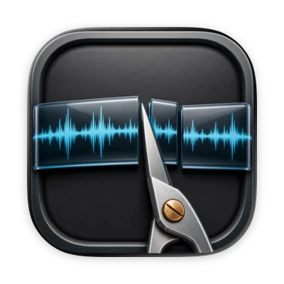
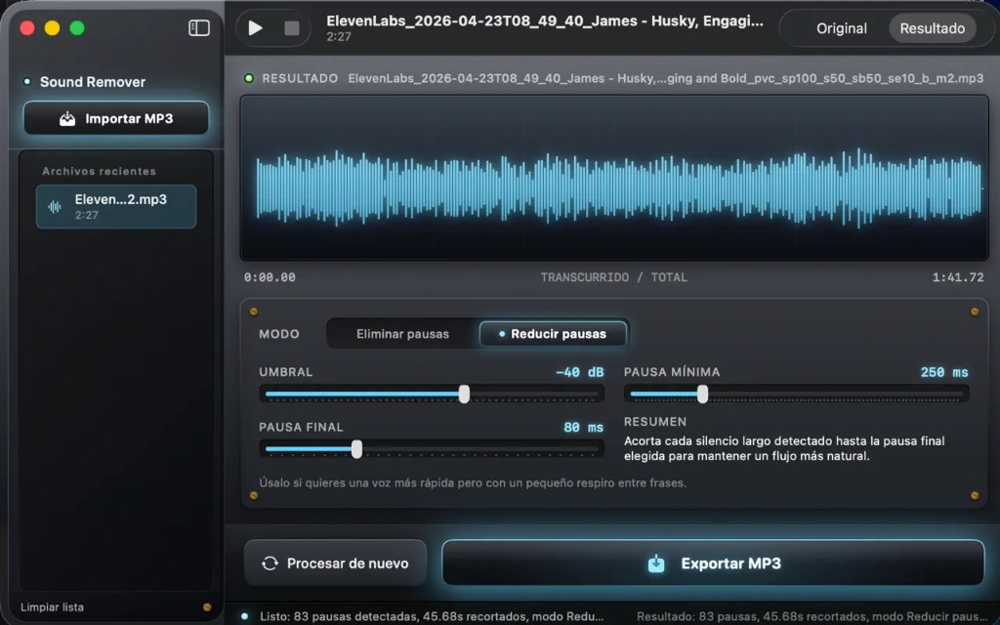

Audio Silence Remover

Fully open source on GitHub: the Mac app and the repo are the same codebase.
I built Audio Silence Remover for my own short-form video workflow: tightening voiceovers before I cut TikTok and YouTube clips. I looked for something native and fast. The closest options were a couple of Gradio and Hugging Face demos that routed audio through models you do not need for this job. They were slow for "remove the quiet bits."
This app does one thing: analyze the waveform and cut or shorten segments that drop below a dB threshold. No cloud, no inference step, no waiting on a GPU.
100% local. No data collected. Your files stay on your Mac from import to export.
Free on the App Store, source on GitHub, no accounts, no analytics pipeline.
Audio Silence Remover is a macOS app for spoken-word MP3s: import a file, detect long pauses, preview the trimmed waveform, export a cleaned MP3. Also useful for podcasters, voiceover work, and audiobook editing when you want tighter pacing without re-recording.
What it does
- Import MP3 and scan amplitude against a configurable threshold (dB). Anything below it counts as silence.
- Remove pauses or reduce pauses to a target length so speech keeps a natural rhythm.
- Preview original vs result on a waveform before you commit.
- Export a new MP3 when you are happy with the cut.
- English and Spanish UI; no data collected (App Store privacy label: the developer does not collect data).
Typical workflow for me: ElevenLabs or voiceover export, trim dead air, drop the MP3 into a short-form edit for TikTok or YouTube.
How it was built
Swift / SwiftUI macOS app with on-device audio processing: read samples, find runs under the threshold, splice. No cloud pipeline, no account, no ML stack. This is signal math.
Visually I went skeuomorphic on purpose: brushed metal, glass panels, controls that look like physical knobs and switches. A nod to the classic Mac OS X utilities I grew up with.
Shipped free on the Mac App Store. Source is public so others can inspect, fork, or adapt the logic.
App Store work: sandbox signing, macOS 15+ target, localized strings, review cycles.
Links
- Mac App Store: Audio Silence Remover
- GitHub: felipebasurto/silence-remover
- Summary on the home page: CV / home
Screenshot
Main window: skeuomorphic Mac-style UI, recent files, waveform with original/result toggle, pause mode and threshold controls, export.
